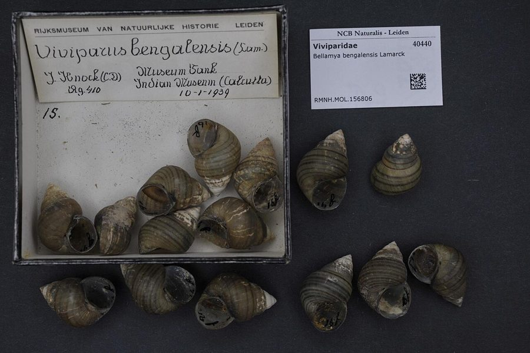

घोंघीBanded Pond Snail
Bellamya bengalensis · Viviparidae · MOL-0008

- Scientific name
- Bellamya bengalensis (Lamarck, 1822)
- Family
- Viviparidae
- Hindi
- घोंघी
- Local names
- ghonghi, chhota ghongha, dhari wala ghongha, shamuk
- Status here
- native
- IUCN
- LC
- Review
- audited and independently read
When to look कब देखें
Expected mainly in January, February, March, June, July, August, September, October, November, December.
Uses and possibilities उपयोग और संभावनाएँ
“Traditional medicine” means a documented traditional use, not a claim that it works. Nothing on this page is medical advice.
Drawn from the documented uses in the profile below, where each is labelled traditional, current or a research lead. All uses →
घोंघी / Banded Pond Snail
Bellamya bengalensis (Lamarck, 1822) — Viviparidae
घोंघी — गाँव के तालाब का दूसरा घोंघा, सेब घोंघे से छोटा और नुकीला, जैतूनी-हरे शंक्वाकार खोल पर भूरी धारियों वाला। अंडे नहीं देता, जीवित बच्चे पैदा करता है, जो खोल में माँ के साथ कई महीने रहते हैं। तालाब की तली पर काई और कीचड़ खाकर पानी साफ़ रखता है और घोंघिल (ओपनबिल), बत्तख और मछलियों का भोजन है। पूर्वी ज़िलों और बंगाल में मछुआरा समुदाय इसे उबालकर खाते हैं।
Quick Identification त्वरित पहचान
| Feature | Description |
|---|---|
| Size | Shell 25–40 mm tall, 18–28 mm wide |
| Shape | Conical, with 5–6 rounded whorls separated by a deep groove (suture); the spire tall and pointed |
| Colour | Olive-green to yellowish-brown, usually with three or four dark spiral bands; often coated with algae |
| Opening | Oval, sealed by a thin, horny, oval lid (operculum) with concentric rings |
| Animal | Grey-brown with a pair of tentacles; the male's right tentacle thickened |
| Young | Tiny shelled snails released alive, sometimes dozens from one female |
Field tip: On the mud of a drying pond or among the weeds, a pointed banded snail the size of a thumb-top, with a thin lid: the pond snail. The apple snail is bigger, rounder and lidded too; the melania is narrower, darker and sculptured. Crack a dead shell gently and you may find young snails inside.
हिंदी — कैसे पहचानें: सूखते तालाब की कीचड़ या घास में अँगूठे के पोर जितना नुकीला, धारीदार घोंघा जिस पर पतला ढक्कन: घोंघी। सेब घोंघा बड़ा और गोल, मेलानिया पतला और खुरदुरा। मरे खोल को धीरे से तोड़ो तो अंदर बच्चे मिल सकते हैं।
Morphology आकारिकी
Biometrics (Gangetic populations):
| Measurement | Range |
|---|---|
| Shell height | 25–40 mm |
| Shell width | 18–28 mm |
| Whorls | 5–6 |
| Aperture height | 12–18 mm |
| Young per brood | 10–60 |
Shell: Thin to moderately solid, smooth with fine growth lines, the whorls rounded and shouldered, the umbilicus a narrow slit; periostracum olive with spiral bands that vary from strong to faint and sometimes bear rows of hair-like projections in young shells.
Operculum: Horny, concentric, fitting the aperture exactly; the snail withdraws and seals itself against drought and predators.
Animal and reproduction: Separate sexes; the male's right tentacle is modified as a copulatory organ. The female retains the fertilised eggs in a brood pouch in the oviduct, where they develop to shelled juveniles before release: ovoviviparity, the mark of the family.
Feeding: A radula for scraping, and the gill also traps suspended particles, so the snail both grazes and filters.
हिंदी: खोल पतला, चिकना, गोल चक्करों वाला, जैतूनी धारियों के साथ। सींग जैसा ढक्कन ठीक फिट होता है; सूखे और शिकारी से बचने को अंदर बंद हो जाता है। नर-मादा अलग, नर का दायाँ स्पर्शक मोटा। मादा अंडों को शरीर के अंदर थैली में बच्चे बनने तक रखती है — जीवित बच्चे पैदा करना इस कुल की पहचान है। जीभ से खुरचकर और गलफड़े से छानकर दोनों तरह खाता है।
Behaviour & Ecology व्यवहार और पारिस्थितिकी
The common pond snail of the Gangetic plain, in every tank, pond, canal and flooded field with a mud bottom, often in hundreds per square metre. It crawls over the bottom and the weeds grazing the film of algae and bacteria and takes suspended matter through the gill, which makes it a cleaner of still water and an indicator of a pond that is alive. When the pond shrinks it burrows into the wet mud and seals its lid, waiting out the heat.
It is a foundation of the wetland food web: Asian Openbill storks are specialised for it, ducks and Lesser Whistling Duck dabble for it, Rohu, Catla and catfish crush the young, otters and Bengal Monitor take the large. It is also an intermediate host for several trematode flukes of birds and cattle, which pass through it on the way to their final hosts.
हिंदी: गंगा के मैदान का आम तालाब-घोंघा, हर कीचड़ वाले तालाब, नहर और भरे खेत में, कभी एक वर्ग मीटर में सैकड़ों। तली और घास पर काई-जीवाणु की परत खुरचता है और गलफड़े से पानी छानता है — ठहरे पानी का सफ़ाईकर्मी और ज़िंदा तालाब का सूचक। तालाब सिकुड़े तो गीली कीचड़ में दबकर ढक्कन बंद। घोंघिल इसी के लिए बना है; बत्तख, रोहू, कतला, ऊदबिलाव और गोह इसे खाते हैं। कुछ फ्लूक परजीवी इसके ज़रिये चिड़िया और मवेशी तक पहुँचते हैं।
Life Cycle / Phenology जीवन चक्र
| Stage / season | Event |
|---|---|
| June–August | Ponds fill; snails emerge from mud; mating |
| August–November | Females release broods of live young, repeatedly |
| 6–9 months | Young reach maturity |
| December–February | Slow growth in cool water |
| March–May | Ponds shrink; snails bury and seal as the water goes |
| Lifespan | 2–4 years |
हिंदी: बरसात में कीचड़ से निकलना और मिलन; अगस्त से नवंबर तक जीवित बच्चों के कई झुंड; छह-नौ महीने में बालिग़; सर्दी में धीमा; गरमी में कीचड़ में बंद।
Host Plants or Prey आहार
- The algal and bacterial film on mud, stones and plants; Water Silk strands; fallen leaves of Indian Lotus and Water Hyacinth; suspended particles.
Predators / Natural Enemies शत्रु
- Birds: Asian Openbill above all; Lesser Whistling Duck, Indian Pond Heron, Black-crowned Night Heron, House Crow on exposed snails.
- Fish: Rohu, Catla, Stinging Catfish, Mozambique Tilapia on the young.
- Others: Bengal Monitor, Giant Water Bug on the small, Indian Flapshell Turtle, otters, and people.
- Parasites: trematode larvae that castrate the snail.
Agricultural / Human Relevance कृषि प्रासंगिकता
Food. Eaten boiled and spiced, or the meat extracted and cooked, by fishing and other communities across Bengal, Bihar, Assam and eastern UP (ghonghi or doka dishes); gathered by hand from drying ponds and paddy in the cool season. A protein of the poor and, in the north-east, a market item.
Duck and fish feed. Collected and crushed as feed for ducks and in fish ponds; in Bengal a small trade.
Lime. The shells, burned, give lime for paan and whitewash, as with the apple snail.
Paddy. Harmless; unlike the invasive South American apple snails it does not eat rice seedlings. Its presence means the field water is reasonably clean.
Health. Snails of this family host flukes that can infect ducks and, more rarely, people who eat snails raw or undercooked; thorough cooking removes the risk. Not a vector of human schistosomiasis in India.
Traditional and Ethnobotanical Use. Snail meat is recorded in eastern folk medicine as a food for the weak and for eye complaints; the shell lime in paan.
Today. Abundant, gathered casually, and declining locally where ponds are sewage-fed or pesticide-laden.
Research direction (a lead, not a result). Snail farming for food and duck feed is practised in the north-east and studied by ICAR; pond snails are also proposed as bioindicators of pesticide load. A count of snails per square metre of pond mud, repeated yearly, is a cheap health check on a village pond.
हिंदी: खाना: बंगाल, बिहार, असम और पूर्वी उत्तर प्रदेश में उबालकर मसाले के साथ, सूखते तालाब और धान से हाथ से बीनकर; ग़रीब का प्रोटीन। बत्तख और मछली का चारा; खोल का चूना। धान को नुकसान नहीं — देसी घोंघे धान की पौध नहीं खाते। कच्चा या अधपका न खाएँ; अच्छी तरह पकाने से परजीवी का ख़तरा नहीं। हर साल तालाब की कीचड़ में प्रति वर्ग मीटर घोंघों की गिनती तालाब की सेहत का सस्ता पैमाना है।
Expected Locally स्थानीय रूप से अपेक्षित
Not a field record. Written from published accounts for eastern Uttar Pradesh. No confirmed local sighting yet — if you have seen it, that is what the atlas needs.
अभी तक स्थानीय पुष्टि नहीं। यह विवरण प्रकाशित स्रोतों से है, किसी अवलोकन से नहीं।
To be expected in every pond, tank and canal with a mud bottom in the district, and in flooded paddy, in numbers; empty shells on pond banks, left by openbills and people, are the easiest first sign to look for. A photograph of a live snail with its banded shell and lid is a confirmed record. Whether it is this species or the closely similar Bellamya dissimilis needs a shell in the hand and a reference.
Distribution वितरण
Global range: The Indian subcontinent and Myanmar; introduced elsewhere in Asia.
In India: Throughout the plains and up to about 1,000 m; the Gangetic plain and Bengal especially.
In Uttar Pradesh: Common in all still and slow waters.
In Basti district / eastern UP: Expected in every pond.
Research Questions शोध प्रश्न
Anyone can investigate these | कोई भी इन प्रश्नों की जाँच कर सकता है
- How many snails live under one square metre of pond mud? / तालाब की कीचड़ के एक वर्ग मीटर में कितने घोंघे? — Sieve the top few centimetres at the drying edge.
- Do openbill storks feed at your pond, and what shells do they leave? — Look for piles of empty, unbroken shells.
- How many young does one female carry? / एक मादा कितने बच्चे रखती है? — Open a freshly dead snail in August.
- Who in the village still eats ghonghi, and how is it cooked? — Ask; record the recipe.
- Are there more snails in the pond with cattle or the one without? — Compare.
Similar Species मिलती-जुलती प्रजातियाँ
| Species | How to tell apart | हिंदी |
|---|---|---|
| Bellamya dissimilis | Very similar; shell shorter and broader with a lower spire and more rounded whorls; often in the same pond | छोटा, गोल चक्कर |
| Freshwater Apple Snail (Pila globosa) | Much larger, globose, with a short spire; pink-orange egg masses laid above water | बहुत बड़ा, गोल |
| Red-rimmed Melania (Melanoides tuberculata) | Narrow, dark, sculptured with ribs, no bands; in silt and sand | पतला, काला, खुरदुरा |
Field rule: A thumb-top-sized, pointed, banded, lidded pond snail that gives birth to live shelled young is the banded pond snail.
Taxonomy & Classification वर्गीकरण
Original description. Described by Lamarck in 1822 as Paludina bengalensis in Histoire naturelle des animaux sans vertèbres 6(2): 173, from Bengal. Placed in Bellamya Jousseaume, 1886, the Old World viviparid genus; older Indian literature uses Vivipara bengalensis.
Subspecies. Several varieties were named by Annandale and Prashad on shell form and banding (eburnea, mandiensis, annandalei); modern treatments regard most as ecological variants.
Family and order placement. Viviparidae, the river snails, defined by live birth and a concentric operculum; order Architaenioglossa, with the apple snails.
Phylogenetic notes. Bellamya is the Asian and African branch of the family; molecular study of the Indian species is incomplete and the boundary with B. dissimilis unresolved.
IUCN status rationale. Least Concern: widespread and abundant across the subcontinent.
Photo Gallery फोटो गैलरी
Photos needed आवश्यक फोटो
- [ ] Live snail on mud showing bands and lid (धारियाँ और ढक्कन)
- [ ] Shell beside an apple snail and a melania for size (तीनों घोंघे)
- [ ] Pile of empty shells at an openbill feeding spot (खाली खोल)
Atlas Connections संबंधित प्रजातियाँ
- Freshwater Apple Snail and Red-rimmed Melania — the other two pond snails
- Asian Openbill — the stork built to eat it
- Lesser Whistling Duck — dabbles for it
- Rohu and Catla — crush the young
References संदर्भ
- Lamarck, J.-B. de (1822). Histoire naturelle des animaux sans vertèbres, vol. 6, part 2, p. 173. Paris. [original description, as Paludina bengalensis]
- Annandale, N. & Sewell, R.B.S. (1921). The banded pond-snail of India (Vivipara bengalensis). Records of the Indian Museum 22: 215–292.
- Preston, H.B. (1915). The Fauna of British India, including Ceylon and Burma. Mollusca (Freshwater Gastropoda and Pelecypoda). Taylor and Francis, London.
- Subba Rao, N.V. (1989). Handbook: Freshwater Molluscs of India. Zoological Survey of India, Calcutta.
- Ramakrishna & Dey, A. (2007). Handbook on Indian Freshwater Molluscs. Zoological Survey of India, Kolkata.
- Sundar, K.S.G. (2005). Predation of fledgling Asian Openbills by the Pariah Kite; and notes on the diet of the Asian Openbill. Forktail 21: 183–185.
- IUCN (2010). Bellamya bengalensis. IUCN Red List of Threatened Species.
- GBIF Occurrence Data — Bellamya bengalensis, India (2026).
Source file: species/fauna/mollusks/pond_snail_bellamya.md